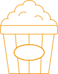

FILMHYGGE
I fællesrummet er der rig mulighed for at smide sig foran fjereneren og se fodbold, film og hygge sig.
Du kan også benytte dig af kollegiets X-box og playstation, hvis du ønsker at have en gaming aften med dine venner.
SPILLEAFTEN
Er du også vild med et godt brætspil? Kollegiet tilbyder en masse gode og forskellige spil, så I kan hygge jer med en gang Matador, Vildkatten eller noget helt tredje.
Husk altid altid at rydde op efter jer selv og efterlad rummet til andre der ønsker at benytter sig af faciliteterne.
FEST & FARVER
Ja, der skal også være plads til fest og farver. I fællesrummet er der massere af plads til at I kan sætte jer ned og snakke, have det sjovt og nyde en øl eller to.
Skulle I få lyst til at holde en privatfest, så læs nedenfor.
FÆLLESKØKKEN
Er I flere der ønsker at lave noget mad og spise sammen, så er der også rig mulighed for det. Vi stiller et stort fælles køkken til rådighed. Hermed behøver I ikke at stå i jeres lille private køkken, men har mulighed for at kunne have god plads omkring jer.
Køkkenet er udstyret med alle basis redskaber og du skal derfor bare selv stå for indkøb.